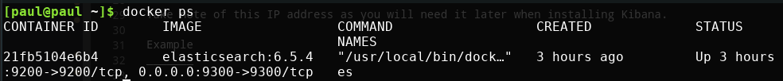
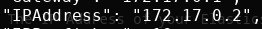
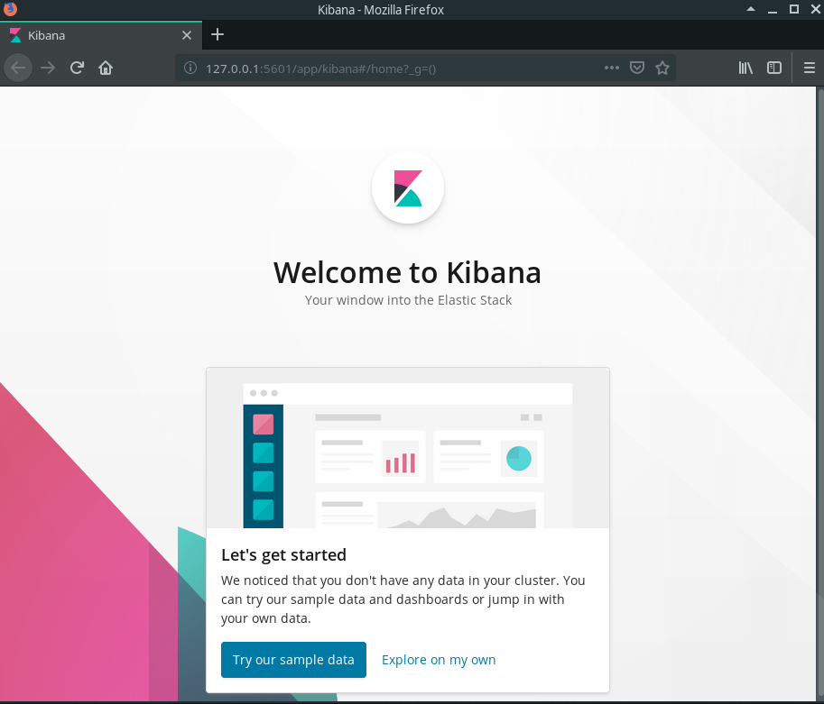
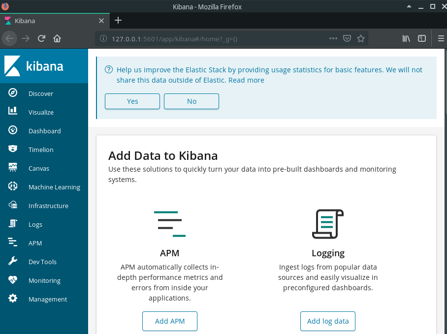

Installation Steps
- Find ElasticSearch container internal IP address
- Create container
- View Kibana dashboard
Get ElasticSearch Container IP
Kibana is an open source data visualization tool for Elasticsearch. It is one of the ways we will interact with Elasticsearch, and provides us with a graphical UI rather than using cURL which is a CLI.
You will need to install Elasticsearch before installing Kibana. We will also need the URL of our Elasticsearch cluster so Kibana knows where to find the data it want to visualize.
If you haven’t already see Installation: Docker.
We will also need the IP address of Elasticsearch. If you installed Elasticsearch as a docker container we can find it’s IP address by typing: $ docker inspect <container name or container id>.
This command will print out a lot of information about the container including it’s internal IP address (“IPAddress”), or the address one container can use to talk to another container.
Take note of this IP address as you will need it later when installing Kibana.
Example
View all running containers: $ docker ps

Inspect the es container: $ docker inspect es

The IP Address of the example Elasticsearch container is: 172.17.0.2
Hint
The IP Address of your Elasticsearch container will probably be different!
Create Container
We can create, and run our container with $ docker run --name "kibana" -p 5601:5601 -e "ELASTICSEARCH_URL=http://<ES_CONTAINER_IP>:<ES_CONTAINER_PORT>" -d kibana:6.5.4
docker run runs a command in a container (in this case it creates the container since it doesn’t already exist)--name allows us to name our container (in this case we are naming our container “kibana”)-p allows us to publish a port (host_port:container_port in this case we are opening port 5601, the default port for kibana)-e allows us to set a kibana configuration with an environment variable (in this case we are setting the elasticsearch url)-d starts our container in detach mode which means it will run in the backgroundkibana:6.5.4 the image of the container (in this case kibana version 6.5.4)
This command creates a container named “kibana” with the kibana 6.5.4 image that listens on port 5601, is detached from this command, and we are configuring the elasticsearch.url to match the IP Address of our elasticsearch container.
Note
The major versions of Elasticsearch, and Kibana must match. In tihs case both Kibana, and Elasticsearch are versions 6.5.X. The first two numbers of the version must be the same.
If you run $ docker ps -a now you should see a new container named “kibana”.
View Kibana Dashboard
Now that we installed Kibana, and configured it with the URL to our Elasticsearch container we can now work with the Kibana Dashboard.
In your browser navigate to 127.0.0.1:5601.

Go ahead and click explore on my own, and it will take you to the Kibana dashboard.

Note
If your browser returns a response of ‘Kibana Server is not ready yet’ give it a minute or so and try again! If this issue persists an error may have happened in creating our container. We can view the logs of our container with: $ docker logs kibana.
We are ready to go with Kibana!